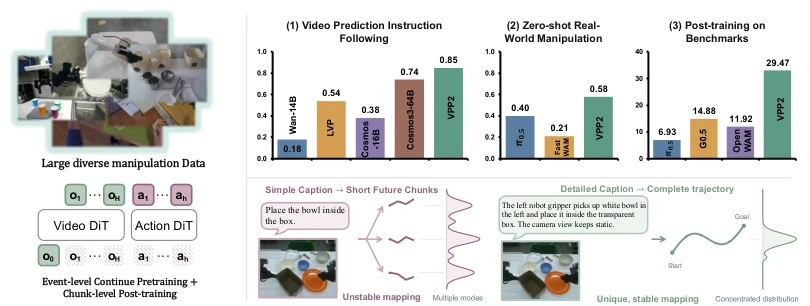
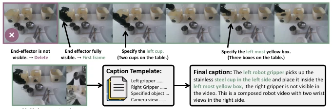
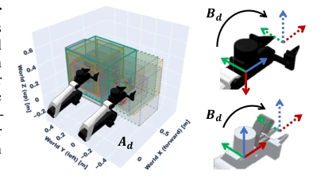
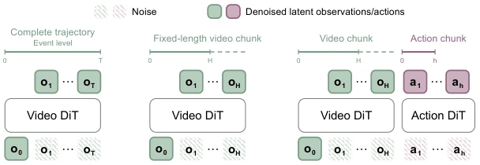
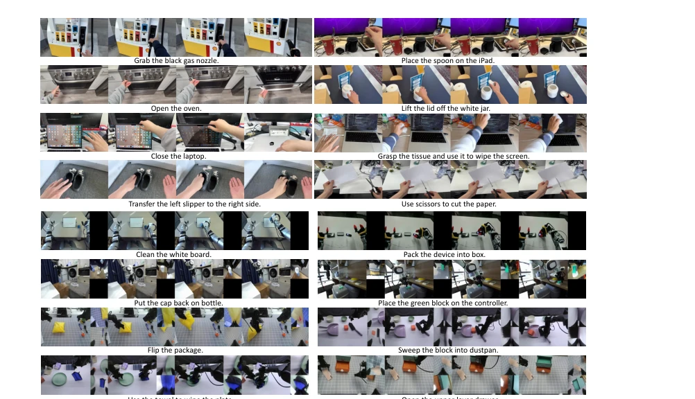
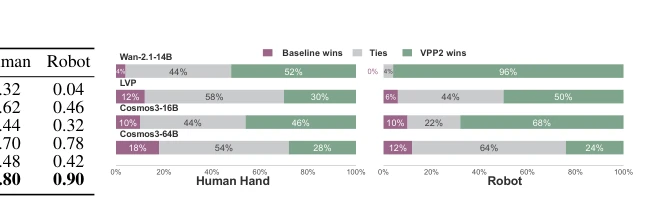
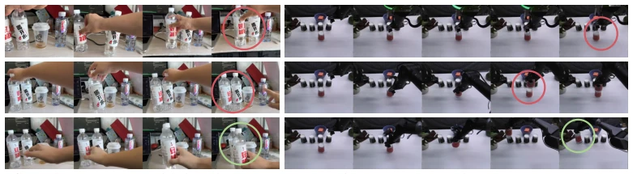
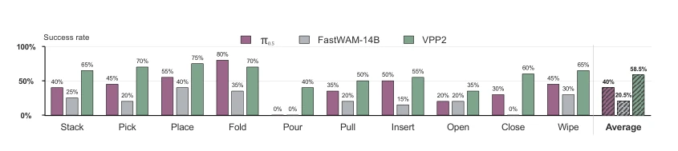
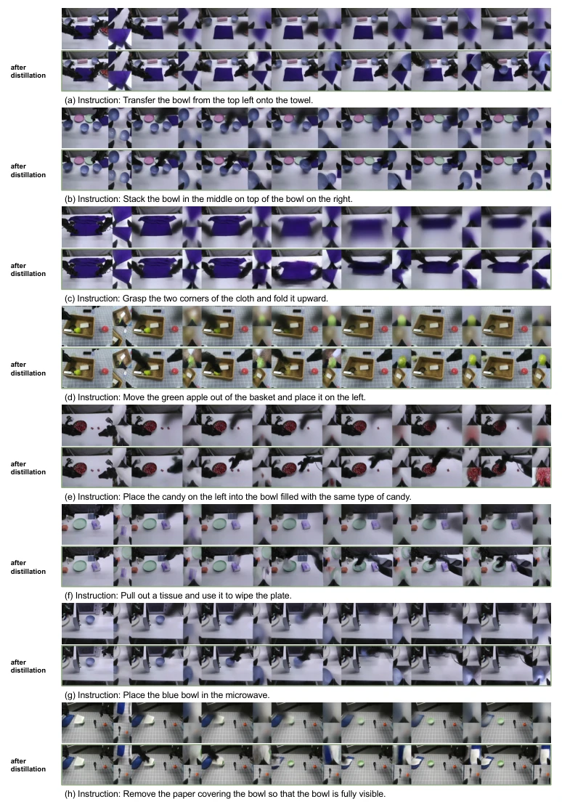

The name VPP2 sounds like an iteration, but the core is 'data alignment' and 'prediction quality'. 14B outperforming 64B is indeed impressive; the key is it didn't let the action head ruin the video pretraining prior. However, relying on VLM for subtask planning, does it count as offloading the planning pressure to the large model? Although single-step generation after distillation is fast, will it lose long-range dependencies? The paper demonstrates the importance of detailed captions and unified coordinate systems, implying the data cleaning cost is not low. This method proves 'accurate prediction' is more important than 'large model', but whether generalization truly surpasses architecture design, although LIBERO-OOD performance in the paper is good, real-world ALOHA task win rate still has room for improvement.
研究动机Motivation
现有 WAM 在开放环境里动作预测经常翻车，导致动作错误。原因有二：基础视频模型没为操作优化，且强行加动作头会破坏泛化能力。(Zhang et al., 2026b) 指出未见场景下预测不可靠，(Mishra et al., 2026) 提到动作训练损害泛化。现有模型在标准评测集表现完美，但一旦任务配置扰动或技能组合新颖，成功率就暴跌。这限制了 WAM 作为通用策略的实用性。因此，需要一种既能忠实遵循指令又能保持物理一致性的视频先验，避免模型学到虚假的短视相关性。
Existing WAMs often fail in action prediction within open environments, resulting in action errors. There are two reasons: base video models are not optimized for manipulation, and forcibly adding action heads compromises generalization capabilities. (Zhang et al., 2026b) notes that predictions are unreliable under unseen scenarios, while (Mishra et al., 2026) mentions that action training damages generalization. Existing models perform flawlessly on standard evaluation sets, but success rates plummet once task configurations are perturbed or skill combinations are novel. This limits the practicality of WAMs as general-purpose policies. Therefore, a video prior is needed that can faithfully follow instructions while maintaining physical consistency, preventing the model from learning spurious short-sighted correlations.

Figure 1: A typical robot policy maps an simple instruction and an observation into an short action chunk. As datasets scale, this mapping becomes increasingly multi-modes and uncertain, leading models to learn spurious short-horizon correlations. VPP2 first establishes consistent semantic-to- trajectory mappings via next event video prediction with detailed caption, then post-train and distill model to generate short action chunk.
方法Method
VPP2 采用三阶段训练 Pipeline。首先，构建大规模操作视频数据集，涵盖机器人、人类及通用视频，统一不同来源的坐标系和末端执行器，消除视觉相似但动作冲突的问题，采用 T 型视图拼接处理多视角。其次，进行事件级视频预训练，用详细 caption 描述任务、末端和目标，建立语义到轨迹的稳定映射，减少未来预测的不确定性，基于 Wan2.1 基座。接着，通过一致性蒸馏将视频模型压缩为单步生成器，实现实时推理，预测固定时长视频块。最后，引入 MoT 架构的动作专家，基于视频 latent 学习隐式逆动力学模型，冻结视频主干仅微调 LoRA 以保留表征。高层规划由 VLM 负责，将开放指令拆解为子任务，VPP2 专注于执行映射，确保动作与预测视频一致。
VPP2 adopts a three-stage training pipeline. First, a large-scale manipulation video dataset is constructed, covering robots, humans, and general videos; coordinate systems and end-effectors from different sources are unified to eliminate issues where visuals are similar but actions conflict, employing T-view stitching to handle multi-views. Second, event-level video pretraining is conducted using detailed captions to describe tasks, end-effectors, and targets, establishing a stable mapping from semantics to trajectories to reduce uncertainty in future predictions, based on the Wan2.1 backbone. Next, the video model is compressed into a single-step generator through consistency distillation to achieve real-time inference, predicting fixed-duration video blocks. Finally, an action expert based on the MoT architecture is introduced, learning an implicit inverse dynamics model based on video latents; the video backbone is frozen, and only LoRA is fine-tuned to retain representations. High-level planning is handled by the VLM, which decomposes open instructions into subtasks, while VPP2 focuses on execution mapping to ensure actions are consistent with the predicted video.

Figure 2: An example of our data process pipeline. The central objective is to reduce uncertainty in future prediction, thereby encouraging the model to learn a consistent mapping from conditioning information to sub-task trajectories. To this end, each caption includes detailed task descriptions, explicit End-Effector Identification, visible target object, and camera-view changes.

Figure 3: (a) Bounding boxes show the aligned workspaces of different datasets. (b) Aligned end-effector coordinate frames.

Figure 4: The VPP2 training pipeline is designed to maximize generalization. Stage 1 uses large- scale, event-level video pretraining to learn a generalizable video model for manipulation. Stage 2 post-trains and distills this model to predict long-horizon video chunks spanning 8 seconds in a single forward pass, taking approximately 0.1 seconds. Finally, Stage 3 trains an action expert to generate 2-second action chunks conditioned on the one-step video latents.
Zero-shot testing on ALOHA real robots shows VPP2 achieves an average success rate of 58.5%, significantly outperforming π0.5 at 40.0% and Fast-WAM at 20.5%. In LIBERO benchmark tests, VPP2 achieved the highest scores in both Pro and OOD settings, demonstrating strong generalization capabilities. RoboDojo simulation and real benchmarks also reached SOTA. Comparison baselines include Wan-14B, Cosmos-64B, etc. Ablation experiments indicate that detailed captions and event-level training are crucial for instruction following. Inference latency after distillation is only 0.22 seconds, meeting real-time control requirements. Although the ALOHA win rate did not reach 100%, it is considered excellent under zero-shot settings.

Figure 5: VPP2 video predictions for human-hand and robot manipulation. Trained on large-scale, diverse manipulation datasets, VPP2 generalizes across human hands and a wide range of robot embodiments. For robot manipulation, VPP2 jointly predicts one to three camera views arranged in a T-shaped composite. Due to space constraints, single-step video predictions after distillation are shown in Figure 10 from Appendix.

Figure 6: Win rates of the pretrained VPP2 model against different baselines on video prediction tasks.

Figure 7: Comparisons on instruction following capability between VPP2, Wan-14B, Cosmos3-64B. VPP2 demonstrates better instruction following on complex tasks requiring spatial understanding.

Figure 8: Zero-shot success rates on the real-world ALOHA across 10 randomly selected task categories. For a fair comparison, we finetune π0.5 and FastWAM on all ALOHA datasets exposed in VPP2’s training data and use the 14B variant of FastWAM.

Figure 10: Additional video prediction results on open-ended tasks. We compare single-step video predictions before and after distillation. Distillation enables high-quality video prediction with just one sampling step.